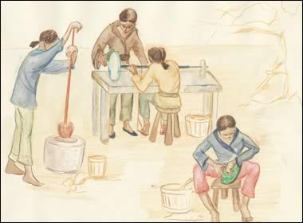

|

They passed one of the slices of jade to another workman. He applied the abrasive sludge to a drill made of a metal tube. He used the drill to make a circular hole in the jade bi. Gao Hongzhe then took the bi. He used finer and finer abrasive sands to polish the jade. After a lot of time the jade bi glowed and shone. | |
| ...previous | next... |